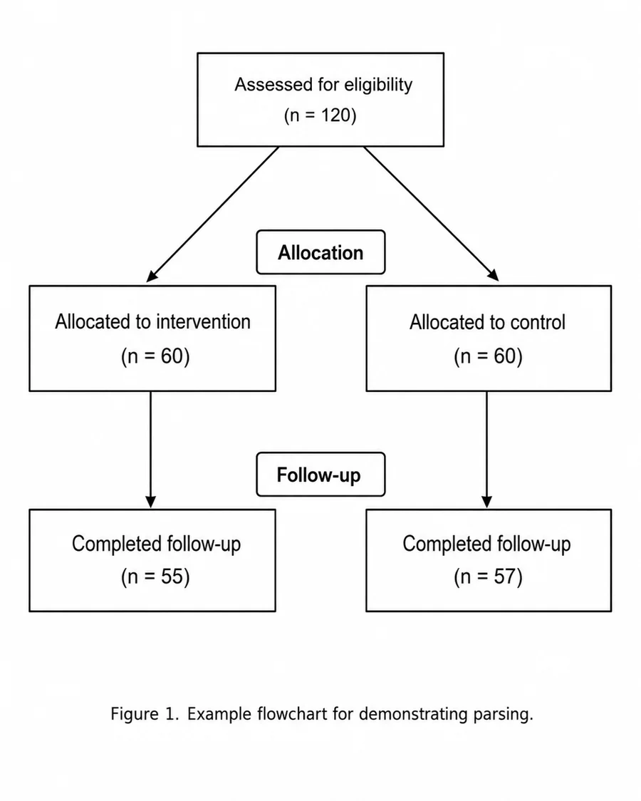
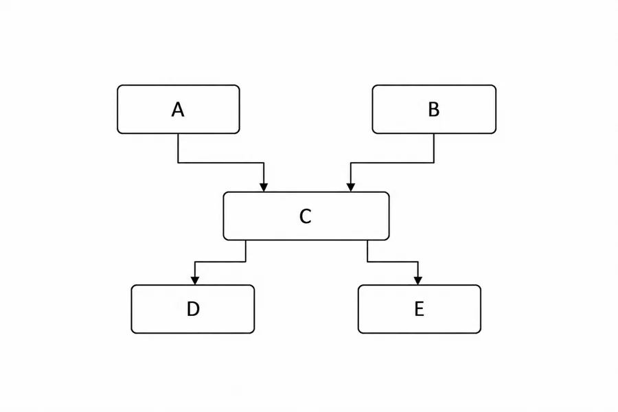
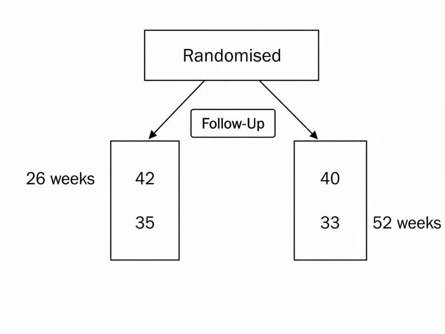

Flowchart parsing
Parsing is the final stage of the core pipeline. It takes flowchart images as input and extracts structured flowchart data.
In a typical workflow, we extract images, classify the relevant flowchart images, rotate them into the correct orientation, and then parse them into structured data.
Parsing can be done in one step, or split into smaller parsing tasks. Splitting the task can improve performance and is useful when you want to or check intermediate outputs.
Understand the flowchart format
flowde represents parsed flowcharts using nodes and additional texts.
A complete parsed flowchart has this structure:
from pydantic import BaseModel
class Node(BaseModel):
node_number: int
text: str
labels: list[str]
points_to: list[int]
class Flowchart(BaseModel):
nodes: list[Node]
additional_texts: list[str]
Each node represents one box or item in the flowchart.
The fields have the following meanings:
node_number: a unique id given to each node in the flowchart;text: the text inside the node;labels: text labels that apply to the node;points_to: the node numbers that follow this node in the flow;additional_texts: text that is not assigned to a specific node.
Example 1: A Basic Flowchart

Is ideally parsed as:
{
"nodes": [
{
"node_number": 1,
"text": "Assessed for eligibility\n(n = 120)",
"labels": [],
"points_to": [2, 3]
},
{
"node_number": 2,
"text": "Allocated to intervention\n(n = 60)",
"labels": ["Allocation"],
"points_to": [4]
},
{
"node_number": 3,
"text": "Allocated to control\n(n = 60)",
"labels": ["Allocation"],
"points_to": [5]
},
{
"node_number": 4,
"text": "Completed follow-up\n(n = 55)",
"labels": ["Follow-up"],
"points_to": []
},
{
"node_number": 5,
"text": "Completed follow-up\n(n = 57)",
"labels": ["Follow-up"],
"points_to": []
}
],
"additional_texts": ["Figure 1. Example flowchart for demonstrating parsing."]
}
Example 2: Keeping branches separate
The goal of parsing is to interpret the visual content of an image and convert it into a standardised JSON format. This means we may not always want to parse the image exactly as it appears.
Commonly, a flowchart will have two branches that follow the same step; see C
in the image below. The author may use a single node to describe the step, but
the branches are still very much consdiered separate. If we parsed this exactly
as it appears in our JSON format, we would lose track of which branch is which:
A → C → [D, E]
B → C → [D, E]

To combat this, if a single node is used to describe a step that applies separately to each branch, we duplicate the node to keep the branches separate. Now we are able to capture the underlying meaning of the image in our JSON format:
{
"nodes": [
{
"node_number": 1,
"text": "A",
"labels": [],
"points_to": [3]
},
{
"node_number": 2,
"text": "B",
"labels": [],
"points_to": [4]
},
{
"node_number": 3,
"text": "C",
"labels": [],
"points_to": [5]
},
{
"node_number": 4,
"text": "C",
"labels": [],
"points_to": [6]
},
{
"node_number": 5,
"text": "D",
"labels": [],
"points_to": []
},
{
"node_number": 6,
"text": "E",
"labels": [],
"points_to": []
}
],
"additional_texts": []
}
This preserves the two intended branches as:
A → C → D
B → C → E
Example 3: Advanced labels
Complicated nodes and labels may require additional processing to convert the visual content to JSON.

If we parse this exactly as it appears, for the bottom left node, we get something like this:
...
{
"node_number": 2,
"text": "42\n35",
"labels": [
"Follow-Up",
"26 weeks",
"52 weeks"
],
"points_to": []
},
...
By parsing 26 weeks and 52 weeks as separate labels, each labels appears to
apply to the entire node. This is incorrect. In reality, 26 weeks applies to
42 and 52 weeks applies to 35.
But remember, our goal is to correctly represent the information in the image, not to parse the image exactly as it appears.
For this scenario, where labels appear to apply to separate parts of the node, we have a couple of options:
Option 1: Join labels
We can join labels that apply to separate parts of a node, into a single label, effectively capturing that each part of the label applies to a different part of the node.
...
{
"node_number": 2,
"text": "42\n35",
"labels": [
"Follow-Up",
"26 weeks\n52 weeks",
],
"points_to": []
},
...
Now 26 weeks\n52 weeks correctly applies to 42\n35
Option 2: Split nodes
In cases such as this one, the bottom left node would probably be more accurately represented by 2 separate nodes. We can split the nodes like these to more accurately capture the information in the image.
The the bottom left node would become:
...
{
"node_number": 2,
"text": "42",
"labels": [
"Follow-Up",
"26 weeks"
],
"points_to": [4]
},
...
{
"node_number": 4,
"text": "35",
"labels": [
"Follow-Up",
"52 weeks"
],
"points_to": []
},
...
Now we correctly capture that 42 patients attended the 26 weeks follow-up and 35 patients attended the 52 weeks follow-up.
Parse full or partial flowcharts
flowde can parse a flowchart in one call, or split the task into smaller
parts.
Parsing options
There are three main ways to parse a flowchart:
- Full parsing: parse the whole flowchart in one step.
- Partial parsing: parse one part of the flowchart, such as node text or flow.
- Combined partial parsing: parse several parts together, such as node text and labels.
Full parsing is simpler. Partial parsing usually gives better performance, but it is more expensive because it requires multiple model calls.
Flowchart parts
The supported parsing parts are:
| Parse type | Output fields |
|---|---|
node_text |
node_number, text |
labels |
labels |
flow |
points_to |
additional_texts |
additional_texts |
See Understand the flowchart format for more details on these fields.
Using partial results as context
Partial parsing lets you use earlier parsed results as context for later parsing steps.
For example, you might first parse the node text:
parts_to_parse={"node_text"}
Then use those parsed nodes as context when parsing labels or flow:
parts_to_parse={"labels"}
parts_to_parse={"flow"}
When parsing labels, flow, or additional_text using existing partial
results, the corresponding node text files must also be provided. This is
because node numbers are needed to join the different parsed parts together.
Define a parsing function
Before running parsing, define the function that will parse each image. This can be one of the default LLM-based parsing functions, or a custom function that you provide.
A parsing function takes the path to one image and an optional partial flowchart. It returns a Pydantic model containing the parsed result.
Use a default parsing function
flowde includes default parsing functions using OpenAI and Gemini models.
Default parsing with Gemini or OpenAI
To use either of the default parsing functions, follow the setup default parsing and classification steps.
To define an OpenAI parsing function:
from flowde.parsing_fns.openai_parse import make_openai_parse_fn
input_text = """
Parse this flowchart into structured data.
"""
parse_fn = make_openai_parse_fn(
input_text=input_text,
model="gpt-5.4-mini",
effort="high",
)
By default, this parses all supported parts:
node_textlabelsflowadditional_text
To parse only particular parts, pass parts_to_parse:
parse_fn = make_openai_parse_fn(
input_text=input_text,
model="gpt-5.4-mini",
effort="high",
parts_to_parse={"node_text"},
)
To use Gemini instead, use make_gemini_parse_fn:
from flowde.parsing_fns.gemini_parse import make_gemini_parse_fn
parse_fn = make_gemini_parse_fn(
input_text=input_text,
model="gemini-3.1-flash-lite",
effort="high",
parts_to_parse={"node_text"},
)
See (insert API ref docs here) for details about params.
Bring your own parsing function
You do not have to use the default OpenAI or Gemini parsing helpers. Any function with the same interface can be used.
A custom parsing function must accept an image path and an optional partial flowchart, and return a Pydantic model:
from pathlib import Path
from pydantic import BaseModel
def my_parse_fn(
img_path: Path,
partial_flowchart: BaseModel | None = None,
) -> BaseModel:
...
The partial_flowchart argument is optional. If no partial flowchart data is
provided, flowde calls the parsing function with only the image.
Run parsing
After defining parse_fn, pass it to one of the parsing pipeline functions.
Most users should use parse_imgs. This takes a directory of PNG images, parses
each image, and saves the parsed JSON outputs to a directory.
Parse images from a directory
from pathlib import Path
from flowde.parse_imgs import parse_imgs
responses = parse_imgs(
parse_fn=parse_fn,
img_dir=Path("data/rotated-flowchart-images"),
save_dir=Path("data/parsed-flowcharts"),
n_jobs=1,
)
The input directory should contain the PNG images at the top level. parse_imgs
searches for files matching *.png directly inside img_dir.
For example:
data/
└── rotated-flowchart-images/
├── paper-1_0.png
├── paper-2_0.png
└── paper-3_0.png
Parsed outputs are saved as JSON files in save_dir. The output filenames use
the image stem:
data/
└── parsed-flowcharts/
├── paper-1_0.json
├── paper-2_0.json
└── paper-3_0.json
The returned responses list contains the parsed Pydantic model for each image,
in sorted path order.
Parse only part of a flowchart
Use parts_to_parse when creating the parsing function.
For example, to parse only node text:
from flowde.parsing_fns.openai_parse import make_openai_parse_fn
from flowde.parse_imgs import parse_imgs
parse_fn = make_openai_parse_fn(
input_text=input_text,
model="gpt-5.4-mini",
effort="high",
parts_to_parse={"node_text"},
)
responses = parse_imgs(
parse_fn=parse_fn,
img_dir=Path("data/rotated-flowchart-images"),
save_dir=Path("data/parsed-node-text"),
)
This produces JSON files containing only the requested fields.
For parts_to_parse={"node_text"}, the output will contain nodes with node
numbers and text:
{
"nodes": [
{
"node_number": 1,
"text": "Assessed for eligibility (n = 120)"
},
{
"node_number": 2,
"text": "Randomised (n = 100)"
}
]
}
Parse using existing partial flowcharts
You can provide previously parsed parts as context for another parsing step.
For example, after parsing node text, you can use those node files when parsing labels:
from pathlib import Path
from flowde.parsing_fns.openai_parse import make_openai_parse_fn
from flowde.parse_imgs import parse_imgs
parse_fn = make_openai_parse_fn(
input_text=input_text,
model="gpt-5.4-mini",
effort="high",
parts_to_parse={"labels"},
)
responses = parse_imgs(
parse_fn=parse_fn,
img_dir=Path("data/rotated-flowchart-images"),
save_dir=Path("data/parsed-labels"),
nodes_dir=Path("data/parsed-node-text"),
)
The files in img_dir, save_dir, and nodes_dir must have matching stems.
For example:
data/
├── rotated-flowchart-images/
│ ├── paper-1_0.png
│ └── paper-2_0.png
└── parsed-node-text/
├── paper-1_0.json
└── paper-2_0.json
This lets flowde match each image to the corresponding partial flowchart.
Parse labels, flow, or additional text
You can provide different partial directories depending on what you want to parse.
To parse flow using existing nodes:
parse_fn = make_openai_parse_fn(
input_text=input_text,
model="gpt-5.4-mini",
effort="high",
parts_to_parse={"flow"},
)
responses = parse_imgs(
parse_fn=parse_fn,
img_dir=Path("data/rotated-flowchart-images"),
save_dir=Path("data/parsed-flow"),
nodes_dir=Path("data/parsed-node-text"),
)
To parse additional text using existing nodes:
parse_fn = make_openai_parse_fn(
input_text=input_text,
model="gpt-5.4-mini",
effort="high",
parts_to_parse={"additional_text"},
)
responses = parse_imgs(
parse_fn=parse_fn,
img_dir=Path("data/rotated-flowchart-images"),
save_dir=Path("data/parsed-additional-text"),
nodes_dir=Path("data/parsed-node-text"),
)
You can also provide multiple existing parts:
responses = parse_imgs(
parse_fn=parse_fn,
img_dir=Path("data/rotated-flowchart-images"),
save_dir=Path("data/parsed-flow"),
nodes_dir=Path("data/parsed-node-text"),
labels_dir=Path("data/parsed-labels"),
additional_texts_dir=Path("data/parsed-additional-text"),
)
If any of labels_dir, additional_texts_dir, or flow_dir are provided,
nodes_dir must also be provided. This is because node numbers are needed to
join the different partial flowchart parts together.
Parse a subset of images
Use range_indices to parse only a slice of the images in a directory.
responses = parse_imgs(
parse_fn=parse_fn,
img_dir=Path("data/rotated-flowchart-images"),
save_dir=Path("data/parsed-flowcharts"),
range_indices=(0, 10),
)
This parses the images from index 0 up to, but not including, index 10 after
the image paths have been sorted.
This can be useful for testing a parsing function on a small number of images before running it on the full directory.
Parse an explicit list of images
If you do not want to parse every PNG in a directory, use
parse_imgs_from_paths. This lets you pass the image paths and save paths
directly.
from pathlib import Path
from flowde.parse_imgs import parse_imgs_from_paths
img_paths = [
Path("data/rotated-flowchart-images/paper-1_0.png"),
Path("data/rotated-flowchart-images/paper-2_0.png"),
]
save_paths = [
Path("data/parsed-flowcharts/paper-1_0.json"),
Path("data/parsed-flowcharts/paper-2_0.json"),
]
responses = parse_imgs_from_paths(
parse_fn=parse_fn,
img_paths=img_paths,
save_paths=save_paths,
n_jobs=1,
)
You can also provide explicit partial paths:
responses = parse_imgs_from_paths(
parse_fn=parse_fn,
img_paths=img_paths,
save_paths=save_paths,
nodes_paths=[
Path("data/parsed-node-text/paper-1_0.json"),
Path("data/parsed-node-text/paper-2_0.json"),
],
labels_paths=[
Path("data/parsed-labels/paper-1_0.json"),
Path("data/parsed-labels/paper-2_0.json"),
],
)
All provided path lists must have the same length and matching stems.
Parallelism
Both parse_imgs and parse_imgs_from_paths accept an n_jobs parameter to
control the number of parallel processes of parse_fn to run.
By default, they will try to use all CPU cores available. If your parse_fn is
memory heavy, or if it calls an external API, you may need to manually reduce
the number of jobs.
from pathlib import Path
from flowde.parse_imgs import parse_imgs
responses = parse_imgs(
parse_fn=parse_fn,
img_dir=Path("data/rotated-flowchart-images"),
save_dir=Path("data/parsed-flowcharts"),
n_jobs=1,
)
Output validation
The default OpenAI and Gemini parsing helpers build a Pydantic response schema
from parts_to_parse.
For example:
parts_to_parse={"node_text"}
requires a response containing only node text fields, while:
parts_to_parse={"node_text", "labels", "flow", "additional_text"}
requires a complete flowchart response.
Extra fields are not allowed in the parsed output. This helps ensure that each parsing step returns only the fields requested for that step.
Next step
After parsing, use the benchmarking tools to compare parsed flowcharts against ground-truth flowchart data.